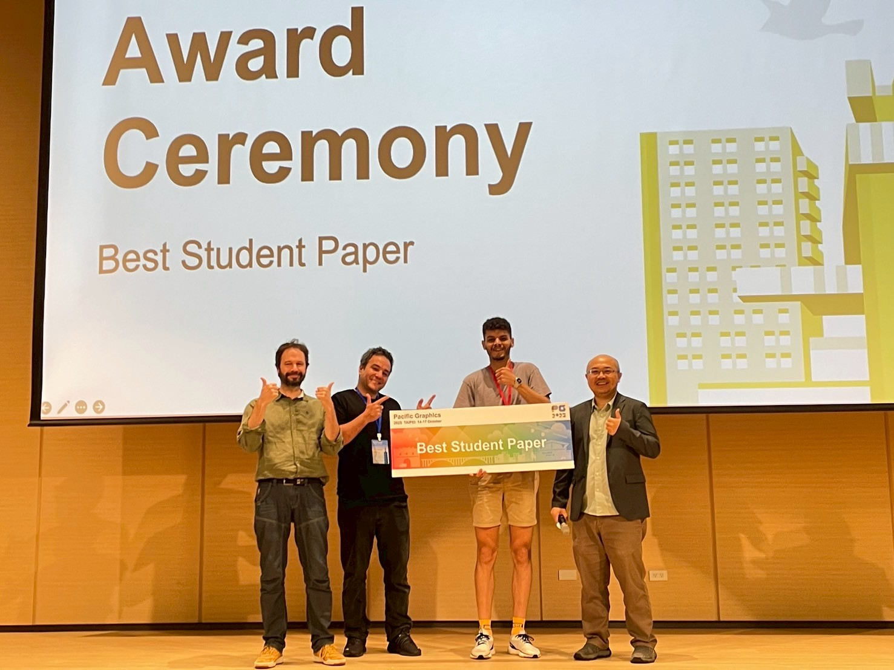
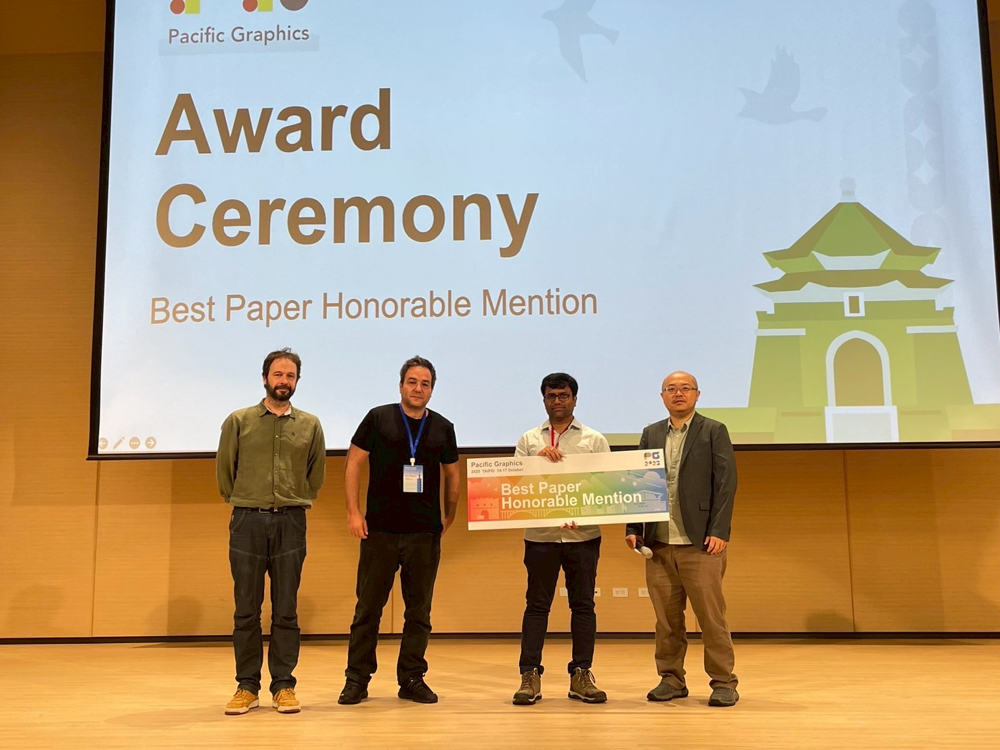
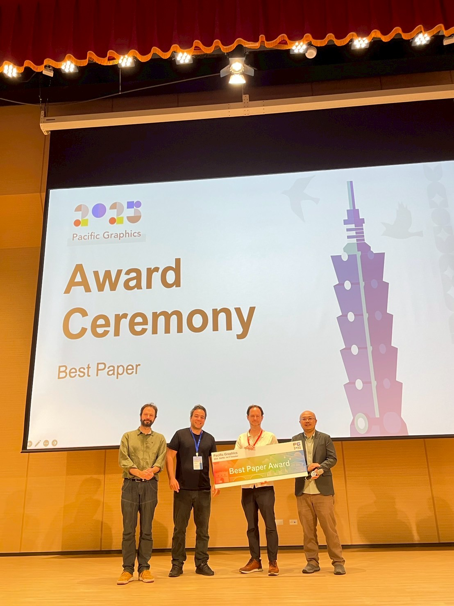

Best Paper Award
Best Student Paper
GNF: Gaussian Neural Fields for Multidimensional Signal Representation and Reconstruction
Abelaziz Bouzidi, Hamid Laga, Hazem Wannous, and Ferdous Sohel
Project

Best Conference Track Paper
By-Example Synthesis of Vector Textures
Christopher Palazzolo, Oliver van Kaick, and David Mould
Best Paper – Honorable Mention
Procedural Multiscale Geometry Modeling using Implicit Functions
Bojja Venu, Adam Bosak, and Juan Raúl Padrón-Griffe

Best Paper
Projective Displacement Mapping for Ray Traced Editable Surfaces
Rama Hoetzlein
